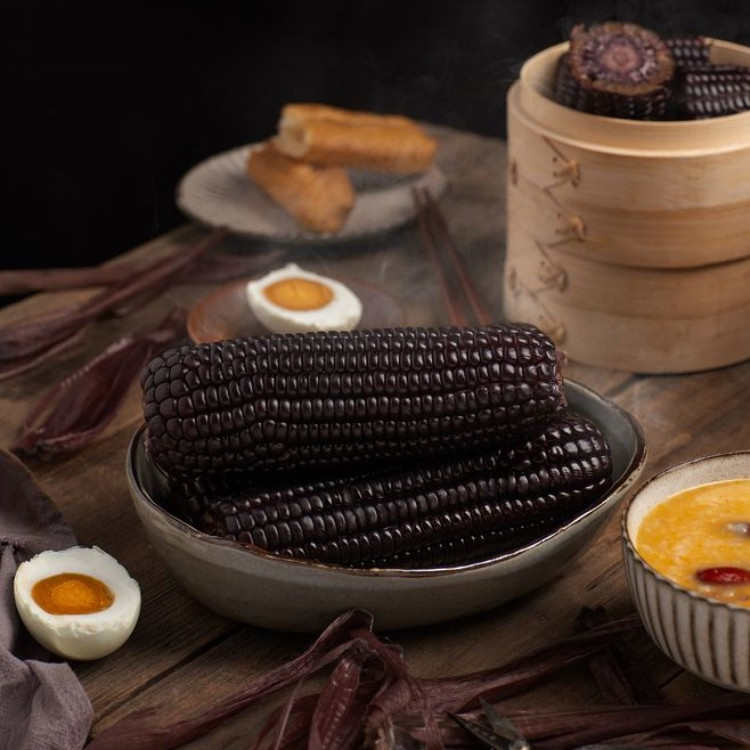

孩子预防近视，这几招你一定要学会！
大部分孩子在一天中，对着课本和作业本的时间相当多，眼睛极易疲劳，情况更严重的会产生刺痛感，时间长了，很多还会患上近视，导致注意力不集中、自控能力下降、耐性缺失等现象，甚至还会形成脆弱急躁的性格。因此，
苏宁超市
2338浏览量
我怀念的不是番茄炒蛋，是炒牛腩鸭!

粮师益油
2640人看过
如何把玉米汁做的香浓细腻？食材的选择很重要！
喜欢喝香浓细腻的玉米汁？自己做，不仅省钱还更营养~【做法】 新鲜甜玉米1根蒸熟，将玉米粒直接用刀切下来（懒人速掰玉米粒）；倒入料理机，加入250ml的牛奶，1L的矿泉水，半碗米饭，启动料理机，打3分钟
苏宁超市
1253浏览量
花样吃枸杞，大家伙可真的是太会吃了！
早康枸杞
696人看过
【执事·魔发学院】换季教你解决“头”等问题
蝉鸣渐歇，秋意渐浓，管家我正享受着天朗气清金秋送爽，猛然发现家里的卫生间、地板上、镜子前有不少掉落的头发丝，为了居家的洁净如新，急忙拿起工具打扫起来，没想到管家我打扫的速度竟然赶不上掉头发的速度！果然
热爱生活的全能管家
405浏览量
天气转凉，推荐几道浓香又好做的腊味煲仔饭（二）
腊味的浓香与米饭交融，饭香菜美，吃完整整一煲，最底层还有一层金黄色的锅巴，干香脆口、口齿留香，美味十足、浓香四溢的煲仔饭吃过后回味无穷。今日份美味：【冬菇腊味糯米煲仔饭】【材料清单】腊肠1条，腊肉10
苏宁超市
3060浏览量
寒露过，吃火锅，莫小仙，得拥有！

良师益油
2.1万人看过
带红重庆的某音，又玩起了这道重庆名菜？！
带红重庆的某音最近又开发出新成果人人皆是酸菜鱼又酸又菜又多余成为新的流行梗于是在人人争相自黑的当下酸菜鱼又莫明其妙的火了起来那么酸菜鱼是个什么梗呢？酸：即嫉妒其他人做自己羡慕的事，于是说一些酸溜溜的话
苏宁超市
3795浏览量
【粮油小课堂】关于中筋面粉，你可能需要知道这些！
爱做饭的小伙伴们在哪里呢？每次买面粉时是否会因为不知道买什么面粉而犹豫不决呢？是否会因为选错面粉而做不出想要的效果呢？没关系，今儿就让咱们在粮油小课堂解决这些疑问。什么是小麦粉？通常我们说的面粉指的是
良师益油
1.1w浏览量
石榴爱好者的终极梦想实现：不用吐籽，一咬爆汁！
石榴在中国传统文化中象征团圆喜庆，繁荣和睦，多子多福长寿驱邪等，是中国传统意义上的吉祥果。石榴不仅外表好看，营养也很丰富，含有许多人体所需的营养成分。中医认为石榴性味甘、酸涩、温，具有杀虫、收敛、涩肠
苏宁超市
2220浏览量
【粮油小课堂】食用油：压榨VS浸出，哪个更健康？
吃得健康是人们日常生活的基本诉求之一，天天都在用的食用植物油，有压榨和浸出两种加工工艺。这两种工艺有什么区别？哪种更健康呢？两种提取食用植物油方法的区别是什么？浸出法：是采用食品工程上的萃取原理，用国
良师益油
1.16w浏览量

香糯有嚼劲，你所不知道的减肥利器——黑玉米
我们通常吃的玉米多为黄色，一般只有颜色的深浅之分，很少见到其他颜色的玉米。其实，玉米的品种有很多，只是你不知道而已。其中，有一种玉米的颜色为黑色，我们称为“黑玉米”。黑玉米是玉米的一种特殊类型，其籽粒
苏宁超市
1.2w浏览量
中药文化 “药食同源” | 东方神草—枸杞子
枸杞，又称枸杞子、红耳坠，是茄科小灌木枸杞的成熟子实。枸杞子药食同源的历史悠 久，是驰名中外的名贵中药材，早在《神农本草经》中就被列为上品，称其为“久服轻身不老、耐寒暑”；有延衰抗老的功效。枸杞子中含
早康枸杞
1159浏览量
香糯Q弹，清甜不腻，给爱芒果的你！
苏宁超市
1021人看过
秋天多喝蜂蜜，有哪些好处呢！
俗话说：“春困秋乏”春季早已过去，秋意渐浓，气温逐渐的降低，到处弥漫着秋天的味道，在办公室中的你是不是提不起精神，感到困倦、疲乏、头昏欲睡，就是秋乏。蜂蜜解秋乏在所有的天然食品中，大脑神经
老山旗舰店
34.8w浏览量
学会这几点，再也不怕买错甜心流蜜的烤薯皇后了
凉风有信，一叶知秋。每当天气转凉时，总有一种美食在挑逗着我们的味蕾。它有着金黄的瓤肉，散发着诱人的香味，一口咬下去，软糯的口感，香甜的味道，总能让人感到无比满足。想必大家美食的味蕾已被唤醒，它就是烤红
苏宁超市
8886w浏览量
360°毫无瑕疵，网红水信玄饼，来一波吗？
苏宁超市
4658人看过
入秋燕窝滋补好时节，美容又养颜
俗话说：“秋冬进补，来年打虎。”于是很多人盲目进补，出现了牙痛、便秘、口腔溃疡、干咳、潮热等症状。为什么会出现这种现象呢？中医介绍，一是进补不当，过食肥美甘腻辛辣之品；二是滋补品选择不当。专家表示，霜
庄民苏宁自营旗舰店
4034浏览量
自然堂护肤产品测评大全，每个字都是干货！
衰老是每个女生的天敌，面对逐渐显现的细纹，坐以待毙可不行。秋冬季节更要注重补水保湿，抵抗外部干燥空气的侵扰！小「鲜」女们准备好小板凳，来看着一篇满满的干货！【推荐一】■凝时鲜颜肌活修护精华
苏宁超市
4467浏览量
【粮油小课堂】吃素可是技术活：啥油适合素食主义者？
现在有不少人因为种种原因更偏爱吃素。殊不知，吃素可是个技术活！因为吃素并不容易达到平衡膳食的营养素摄入要求。素食者容易缺乏多种重要营养素，如：蛋白质、钙、维生素D、铁、维生素B12、n-3脂肪酸等。其
粮师益油
1.7W浏览量
吃火锅上火？麻辣开胃的火麻油拌木耳了解一下！
苏宁超市
7226人看过

【用心厨房】自制“0脂”小零食，减肥也能吃的食物！
零食，当！当！当！秋季，最容易屯脂肪的季节，喜欢刷剧吃零食的你，怕胖吗？当然了，今天就不用慌了，如果你的零食还木有囤够！不妨来看看今天的这个不一样的零食吧~且零食还能化解一般尬聊的场面，特
粮师益油
1.6w浏览量
清甜鲜美又不腻，秋日美味米粉了解一下
罗秀米粉产于广西桂平市罗秀镇。以条细匀称，外观洁白、油亮，质地柔韧，耐煮，细腻，润滑，食之爽脆而闻名遐迩。罗秀米粉可煮可炒，可根据不同口味做成肉汤粉等等广西特色口味的米粉。换季入秋，人容易烦腻，胃口不
苏宁超市
2768浏览量
吃火锅上火？麻辣开胃的火麻油拌木耳了解一下！
苏宁超市
4887人看过
【用心厨房】身上肉肉在叫嚣？ 健康便当消灭它!
天气越来越清爽了，看来又是到了该减肥的时候了。可是更愁人的事情来了！——一天几餐？吃啥？怎么吃？太多问题了吧！但是！减肥的话，怎么少的了减盐，减盐版便当呢！减盐版健康便当食材准备：1、调料：减盐味极鲜
粮师益油
1.6w浏览量
【用心厨房】大吉大利，今晚我们来吃白斩鸡！
“大吉大利，今晚吃鸡”是多少游戏咖追求的游戏结束画面，作为资深吃货的小编自然有其他追求，吃鸡咱可是专业的。在我眼里鸡可是家禽里的全能选手，不信你看哈：涉及做法有红烧鸡、黄焖鸡、隔水蒸鸡、爆炒辣子鸡；涉
粮师益油
4.3w浏览量
提神不伤身，老国企用新产品震撼市场！
随着社会的发展，营养科学研究的进步，人们对自身健康的关注日益加强。消费者喝饮料的目的不再仅限于解渴，对身体健康的促进、生活质量的提高、身心压力的释放成为人们对饮料产品的新期望。近年来，功能饮料行业呈现
苏宁超市
8136浏览量
论如何做一个优秀的吃货！
蛋糕、薯条、比萨、汉堡、火锅......这些光念名字就能让吃货们饥肠辘辘的美好词汇，让人幸福到泪流满面，巴不得下一刻就像福子一样直接上手开吃。但作为一名资深的吃货，我们深知有仪式感地品尝美食同样也是一
洁柔苏宁自营旗舰店
3707浏览量
闭口又出现了！清洁卸妆做好了吗？
天呐！一早起来发现又长闭口痘痘了！尤其是在换季时期，皮肤特别容易敏感。在人的皮肤有一层保护膜，医学上称为皮脂膜，它能保护皮肤免受外界物质的伤害、入侵，锁住皮肤里面的水分不流失。而敏感皮肤呢，几乎都会伴
洁柔苏宁自营旗舰店
1.4w浏览量
【知识】去角质干货大科普！
大家都知道皮肤需要定期去角质，你真的了解角质吗？有的时候你所以为的去角质其实是错误的噢。其实，在正常情况下角质层对我们的皮肤来说反而是一道天然的保护屏障，它可以帮我们隔绝一些光、或者损伤物质的侵害，另
苏宁超市
1.3w浏览量
适合学生化妆，滋润粉底液

娘子Aha
15.6万人看过
丝塔芙|夏日约会小小肌秘：清甜girl就是你
仲夏之夜，当心暴露你的肌肤小瑕疵！再精致的女孩也有犯懒的时候，夏天的你，是不是一不小心就懈怠啦？丝塔芙有妙招，仙女们修炼好这几点，敏感肌妥妥征服一年四季！☛“大白罐”必杀技：便宜大碗还心机回购指数：?
苏宁超市
15.1w浏览量

这些情人节经典表白句，哪一句打动了你？
七夕情人节又是一年牛郎织女相会的日子，又是一个情人手牵手的夜晚，你遇到你心仪的他了吗？希望在一个特别的日子里邂逅你理想中的伴侣吗？如果你渴望梦想成真，我们来为你创造这个“缘”，你自己去争取那“份”心动
凤祥酒水专营店
507浏览量
自然堂|不怕皮肤衰老，用凝时冰肌水就妥了！
很多妹子，明明年纪才20+，但是脸上皮肤已经开始出现初老的症状，要不就是眼周有细纹，要不就是皮肤不再有弹性，总之看起来特别显老。经常加班熬夜，第二天又要早早去上班，时间一长，皮肤也越来越显老，暗沉细纹
苏宁超市
8310w浏览量
太上头了，送“现女友”蜂蜜的N个理由
七夕到了，不管是现女友还是“现女友”，送礼物这件事是不是太上头了呢！七夕小百科：七夕节是中国最具浪漫色彩的传统节日，也是爱情的节日，是一个以“牛郎织女”民间传说为载体，以祈福、乞巧、爱情为主题，以女性
老山旗舰店
7139浏览量
请注意，你可能换上了开学症......
开学啦!可是你却病了~不过你要知道， 就算大雨把这座城市颠倒，开学我也得滚回学校 ！有一种，叫开学病。如果不及时医治，你可能......会有以下严重症状：【困扰青少
斑布苏宁自营旗舰店
809浏览量
自制清甜可口水果茶！简单便捷一周不重样！
天气越来越热，每天都要喝超多水饮料太甜喝多了怕胖，白开水又无味那就做几款口感超级清新又酸甜爽口的新鲜水果茶吧~记得做好了要冷藏2小时哟~懒人必备水果茶，简单易做，好喝解暑又提神~1、水蜜桃汽水1个水蜜
星优选旗舰店
5.7W浏览量